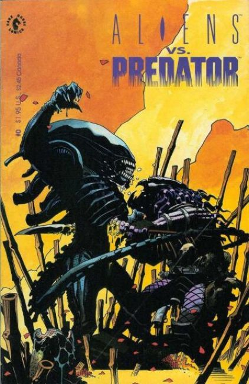
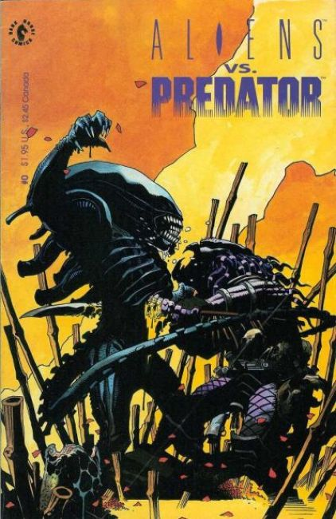

 About: Aliens vs. Predator (also known as Alien vs. Predator, abbreviated AVP) comics are part of the crossover franchise originated and published by Dark Horse Comics. According to the notes which accompany the first Aliens versus Predator graphic novel, the original idea of combining the Aliens with Predators was the result of a brain-storming session between the comic's creators (AVP artist and editor Chris Warner is specifically credited) in the late 1980s.
Original
The first Aliens versus Predator centers on Ryushi, a recently colonized planet, and Machiko Noguchi, the Chigusa Corporation's administrator there. The settlers on Ryushi raise cattle-like quadrupedal ungulates called rhynth for export to other solar systems, and at the time of the story are in the process of assembling a shipment of the native livestock.
Unbeknownst to the colonists, Ryushi is a traditional hunting ground of the Predators, and they are returning for their initiation rites. On board the Predator ship, the prey are prepared: an Alien queen lays eggs for delivery to Ryushi. Confounding the Predator's safeguards, this queen manages to slip an egg containing the seed of another queen into the shipment.
On reaching Ryushi, the eggs hatch and infect Rhynths. Led by a Predator elder, "Broken Tusk", the Predators arrive expecting to encounter Aliens. However, they soon run into the settlers and, after Broken Tusk is incapacitated, change their plans and hunt them instead.
Meanwhile, the infected Rhynth have been loaded aboard a cargo transporter and, with a queen among their number, an Alien colony quickly takes hold. The Predator assault continues to the settler colony itself, and the surviving settlers find themselves pitched between the Aliens and Predators. Broken Tusk, now recovered due to the intervention of a human doctor, sides with Machiko, and together with the cargo ship's crew they arrange for the transporter's massive orbiter to crash into Ryushi and destroy the colony and the Aliens.
In the ensuing fight, Broken Tusk is mortally wounded, but, admiring the courage of his human comrade, "bloods" Machiko with the mark of his clan. The story concludes with Machiko the sole inhabitant of Ryushi, the surviving settlers having been evacuated from the planet. She awaits, and is rewarded with, the return of the Predators and another hunt. One of Broken Tusk's former Predator rivals greets her and, recognizing Broken Tusk's clan symbol, accepts Machiko into the hunt.
Aliens vs. Predator: